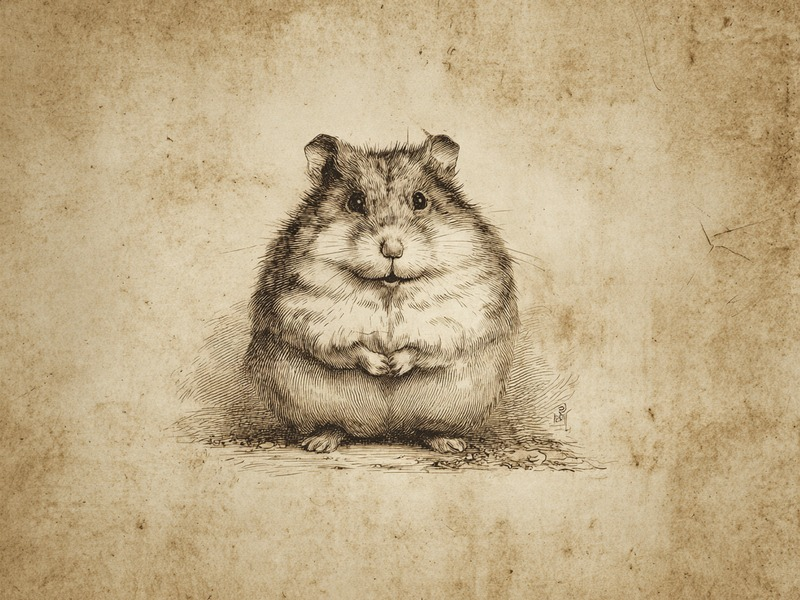

犬はなぜうんちの前にぐるぐる回るの?
実は方角にまでこだわっていた、という笑ってしまう研究結果があります。

猫はなぜ明らかに小さすぎる箱に入りたがるの?
「もし入れるなら、座る」猫の宿命と、テープの四角にも反応する不思議。

猫の「高所は平気」は実は危険信号?
驚異の立ち直り反射と、「中くらいの高さが一番危ない」というふしぎな事実。

パンダはなぜ1日14時間も食べ続けるの?
クマ科なのに笹しか消化できない、という体を張った「ざんねん」設計。

犬はなぜ草を食べるの?
消化に良いわけでもないのに、なぜかむしゃむしゃ。理由はまだはっきりしていません。

コアラはなぜ1日20時間も眠り続けるの?
低栄養で毒素まで含むユーカリのせいで、寝るしかなくなった省エネ生活。

フクロウはなぜ首が270度も回るの?
目玉が固定されて動かせないという弱点を、頸椎14個と特殊な血管システムで力技カバー。

ラッコはなぜ大量に食べ続けなければならないの?
皮下脂肪を持たない体を、毛皮の空気層と体重の2〜3割の食事量で力技カバー。

ナマケモノはなぜ命がけで週に1回しかトイレに行かないの?
週1回のトイレに全エネルギーの約8%を注ぎ込む、命がけの「ざんねん」な排泄事情。

キリンはなぜ横になってほとんど眠らないの?
野生では横になって眠る時間が一晩わずか8.6分、長すぎる首と脚が招いた「ざんねん」な睡眠事情。

タコはなぜ泳ぐと心臓が1つ止まってしまうの?
3つある心臓のうち全身担当の1つが、泳ぐと止まってしまう「ざんねん」な体の仕組み。

カバはなぜ泳げないの?水の達人なのに浮けない体 NEW
水中適応した体を持ちながら、密度が高すぎて浮けない。川底を歩いて移動する「ざんねん」な事情。

猫は甘さを感じられない?ケーキを前にしても無反応な理由 NEW
甘味受容体の遺伝子が壊れていて、そもそも甘さを感知できない。ネコ科全体に共通する「ざんねん」な話。

ハムスターの頬袋、実は反転して口から飛び出すことも NEW
便利な収納スペースが、炎症や加齢をきっかけに反転してしまう「頬袋脱」という症状を解説します。